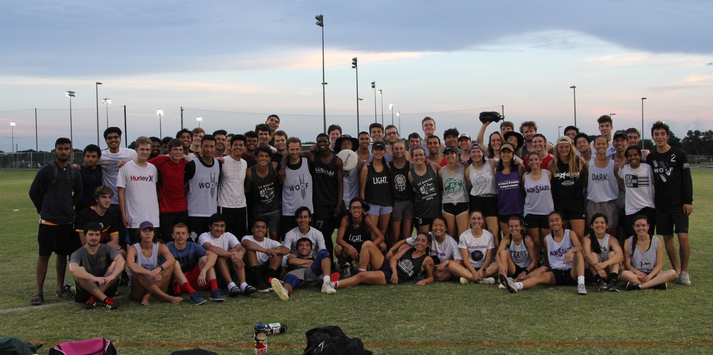

<div class="container-fluid">
    <div class="center">
        
        <p>UTD Ultimate is a community of diverse individuals who share the common interest of ultimate frisbee. We have teams for all levels and experience! We strive for team and individual development through the medium of ultimate frisbee.</p>

        <hr />

        <mat-tab-group mat-align-tabs="center" dynamicHeight>
            <mat-tab label="Annual Events">
                <div class="row justify-content-md-center">
                    <div class="col col-lg-2"></div>
                    <div class="col-md-auto">
                        <ul class="list">
                            <li>Summer Sand Mini</li>
                            <li>Summer Orientation Fairs</li>
                            <li>Welcome Week Mixed Mini Tournament</li>
                            <li>Diversity and Inclusion Meeting</li>
                            <li>Viva Volunteer</li>
                            <li>Homecoming Tailgate</li>
                            <li>Winter and Spring Banquets</li>
                            <li>Spring Club Sports Banquet</li>
                        </ul>
                    </div>
                    <div class="col col-lg-2"></div>
                  </div>
            </mat-tab>
            <mat-tab label="Whiplash">
                <h3>Whiplash</h3>
                <p>Established in ?, initally named Monstars, the team re-branded in 2019 to Whiplash.</p>
                <h4>Practice Information:</h4>
                <p>Monday, Wednesdays 7-10pm @ UTD Soccer Field</p>
            </mat-tab>
            <mat-tab label="Woof A">
                <h3>Woof A</h3>
                <p>Established in 2008, initally named D-TEX, the team re-branded in 2016 to Woof. Since then, the team has been focused on becoming a nationally competitive team. Over the past four years, Woof has been consistently achieving better and better seasonal results. In the most recent year, 2020, Woof beat two top 10 national teams - Carleton and Ohio State.</p>
                <h4>Practice Information:</h4>
                <p>Monday, Wednesdays 7-10pm @ UTD Soccer Field</p>
            </mat-tab>
            <mat-tab label="Woof B">
                <h3>Woof B</h3>
                <p>Established in 2017, Woof B has been a competitive development team, one of the best in the DFW area.</p>
                <h4>Practice Information:</h4>
                <p>Monday, Wednesdays 7-10pm @ UTD Soccer Field</p>
            </mat-tab>
        </mat-tab-group>

        <hr />

        <div style="margin-bottom: 20px">
            <h1>FAQ's</h1>
            <mat-accordion *ngFor="let faq of faqs">
              <mat-expansion-panel>
                <mat-expansion-panel-header>
                  <mat-panel-title>
                    {{ faq.question }}
                  </mat-panel-title>
                </mat-expansion-panel-header>
                <p>{{ faq.answer }}</p>
              </mat-expansion-panel>
            </mat-accordion>
        </div>

</div>